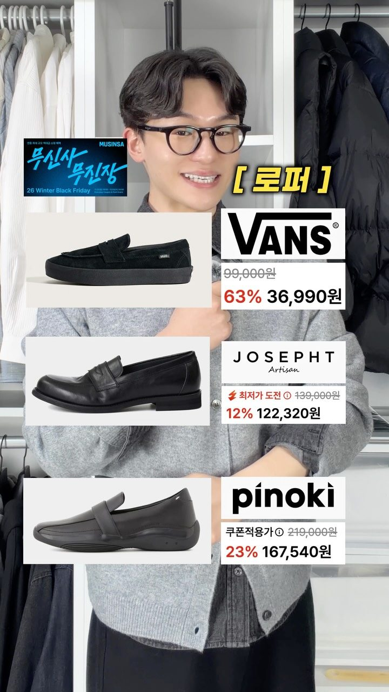

패션 · 릴스 · 2026-11-25
무신사 무진장 블랙프라이데이 신발 브랜드 추천 정리
무신사 무진장 겨울 블랙프라이데이 기간에 챙기기 좋은 신발 브랜드를 스니커즈·방한화·더비·구동화·워커·로퍼 종류별로 정리한 내용이다.

- 검정 스니커즈는 아디다스, 피노키, 나이키를 추천한다.
- 방한화는 로맨틱무브, 어그, 피터 피노키를 추천한다.
- 캐주얼 더비는 식스핏, 닥터마틴, 킨치를, 클래식한 더비는 로맨틱무브, 포스트맨, 킨치를 추천한다.
- 구동화는 로맨틱무브, 페몬트, 온루를 추천한다.
- 워커는 팀버랜드, 닥터마틴, 레드윙을 추천한다.
- 로퍼는 반스(63% 할인 36,990원), 조셉트(12% 할인 122,320원), 피노키(23% 할인 167,540원)를 추천한다.